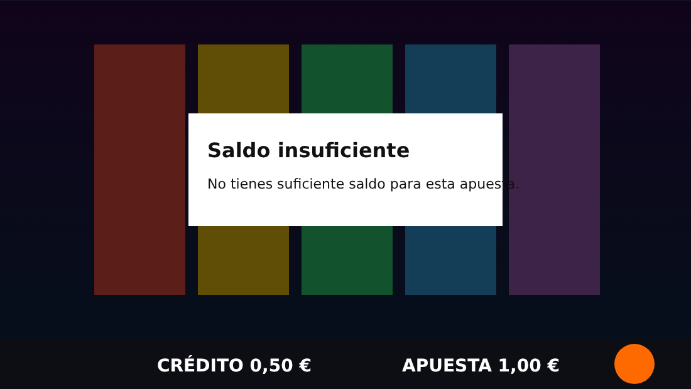
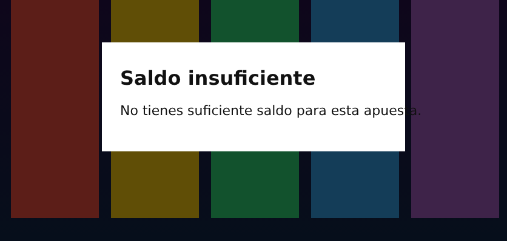
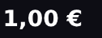
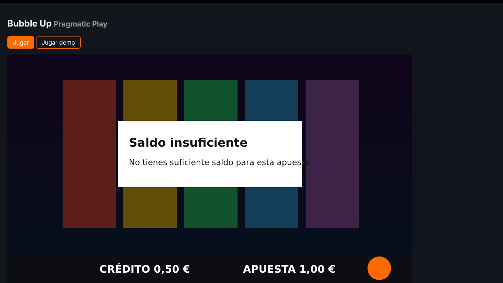
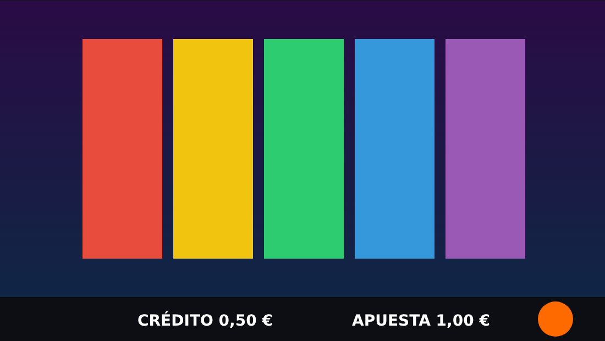

Saldo insuficiente · mock ✅ PASS
6 de 6 PASS
Checks
| Resultado | Check | Esperado | Obtenido | Fuentes | Evidencias |
|---|---|---|---|---|---|
| ✅ PASS | Tirada rechazadaS2-REJECTED |
ningún ROUND_STARTED con cobro ni doSpin cobrado | 0 ROUND_STARTED · 0 doSpin cobrados · detector: rejected (señales: pantalla) | Evento Red |  |
| La tirada no se completó como tirada pagada | |||||
| ✅ PASS | Mensaje en el idioma esperadoS2-MSG-LANG-VISIBLE |
aviso de saldo insuficiente en «es» (saldo insuficiente / fondos insuficientes / sin fondos / insuficiente / no tienes suficiente / no tienes saldo suficiente / saldo no es suficiente / no dispones de saldo suficiente) | «Saldo insuficiente No tienes suficiente saldo para esta apues» → idioma es | Pantalla |  |
| El jugador ve el aviso en el idioma del mercado | |||||
| ✅ PASS | Apuesta mostradaS2-BET-VISIBLE |
1,00 € (último BET_CHANGED) | «1,00€» → 1,00 € | Pantalla Evento |  |
| La apuesta mostrada es la intentada | |||||
| ✅ PASS | Moneda correctaS2-CURRENCY |
EUR | juego EUR · cartera EUR · pantalla EUR | Evento Cartera Pantalla | |
| Todas las fuentes muestran la moneda del mercado | |||||
| ✅ PASS | Saldo de Betsson sin cambiosS2-BETSSON-UNCHANGED |
0,50 € (sin cambios) | 0,50 € | Cartera |  |
| La cartera no cambió | |||||
| ✅ PASS | Saldo del juego sin cambiosS2-GAME-UNCHANGED |
0,50 € (ningún BALANCE distinto) | 0,50 € | Evento | — |
| El saldo del juego no cambió | |||||


Un dato, varias fuentes
| Evento | Red | Cartera | Pantalla | |
|---|---|---|---|---|
| Apuesta | 1,00 € | — | — | 1,00 € |
| Premio | — | — | — | — |
| Saldo antes (juego) | 0,50 € | — | — | — |
| Saldo después (juego) | 0,50 € | — | — | — |
| Saldo Betsson | — | — | 0,50 € | — |
| Saldo Betsson después | — | — | 0,50 € | — |
| Moneda | EUR | — | EUR | EUR |
| Ronda (rid) | — | — | — | — |
Sin hallazgos: todas las invariantes se cumplen.
Lo que vio el tester
Capturas clave



Fases
F0Preparación · ok (0.6 s)F1Sesión · ok (0.1 s)F2Escucha · ok (0.0 s)F3Juego listo · ok (6.6 s)F4Controles · ok (0.0 s)F5Estado inicial · ok (0.1 s)F6Acción del jugador · ok (0.1 s)F7Rechazo · ok (1.5 s)F8Testigo visual · ok (1.7 s)F9Cartera final · ok (5.7 s)F10Ensamblado de la ronda · ok (0.0 s)F11Validación · ok (0.0 s)F12Evidencia e informe · ok (0.3 s)
Línea temporal
| t | Fuente | Tipo | Resumen |
|---|---|---|---|
| -6.96 s | note | cookies | consentimiento ya guardado (sin banner) |
| -6.96 s | wallet | balance | 50 EUR |
| -6.08 s | wallet | balance | 50 EUR |
| -6.08 s | note | juego | «Bubble Up» abierto por buscador |
| -6.01 s | note | Real Play | botón «Jugar» |
| -5.89 s | event | UNKNOWN(gameLoadingStarted) | |
| -4.68 s | event | READY ← gameLoadingEnded | |
| -4.68 s | event | BALANCE ← updateBalance | amount=50 currency=EUR |
| -4.68 s | event | UNKNOWN(betInfo) | |
| -4.68 s | event | UNKNOWN(betMultiplier) | |
| -4.68 s | event | BET_CHANGED ← betChanged | bet=100 |
| -1.88 s | note | sesión de juego DGOJ | confirmed |
| -1.09 s | wallet | balance | 50 EUR |
| -0.10 s | note | antes | B0=50 EUR · juego=50 EUR · apuesta=100 (evento BET_CHANGED) |
| -0.10 s | note | precondición de saldo | saldo 50 < apuesta 100 céntimos: la cuenta está preparada para el rechazo |
| 0.00 s | action | spin | key Space |
| 1.54 s | note | rechazo | rejected (confianza medium): la pantalla cambió a los 688 ms (aviso) |
| 3.23 s | screen | lectura message | «Saldo insuficiente No tienes suficiente saldo para esta apues» → saldo insuficiente no tienes suficiente saldo para esta apues (confianza 0.99) |
| 3.23 s | screen | lectura bet | «1,00€» → 100 (confianza 0.96) |
| 3.92 s | wallet | balance | 50 EUR |
| 8.91 s | wallet | balance | 50 EUR |